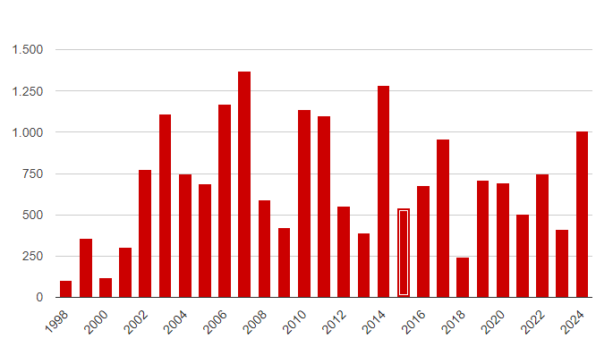

A fumaça prejudica toda a fauna da localidade, obrigando animais a irem para habitat que não os de origem. Há, também, a poluição causada nas estradas e rodovias, prejudicando o trânsito e podendo gerar graves acidentes, além do incômodo gerado para as pessoas, causando sérios problemas respiratórios.
Além dos danos ambientais e de saúde, as queimadas também têm impactos econômicos significativos, prejudicando a agricultura, o turismo e outras indústrias que dependem de ecossistemas saudáveis, sendo os que mais sofre com queimadas em grandes escalas, as comunidades que são pegas por este fogo, causando sofrimento humano e também colocando grande pressão nos serviços socias e de emergência.
Rio de janeiro
